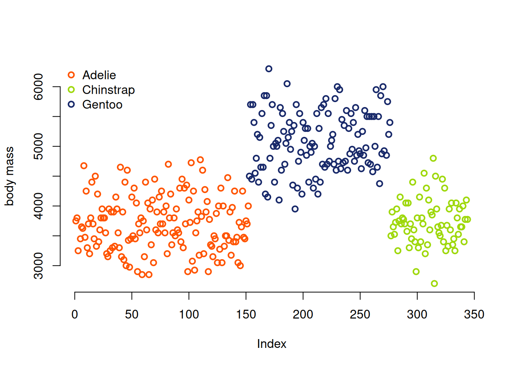
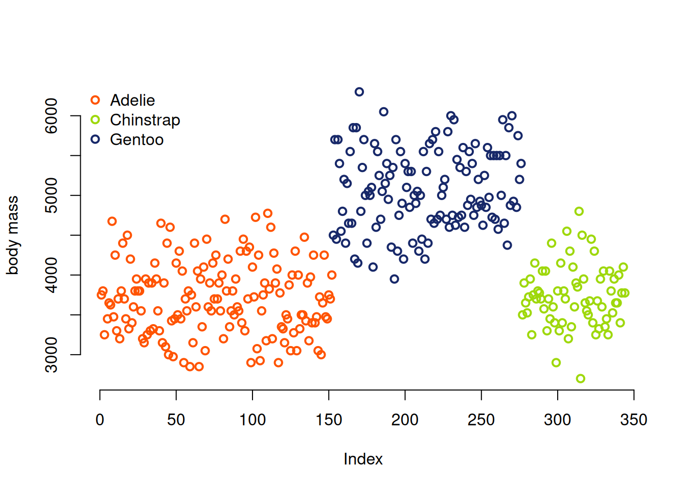
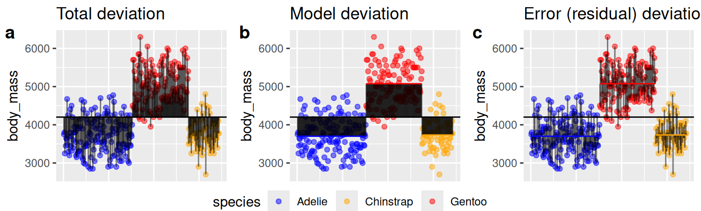

plot(penguins$body_mass, bty="n", ylab = "body mass",
col=penguins$species, lwd=2)
legend('topleft',levels(penguins$species),bty="n", pch=1, pt.lwd=2, col=palette())
We previously discussed linear models and learned to build a very simple linear model to estimate the mean. We also learned how to calculate residuals, which in this case were the differences between each datapoint and the mean.
In this section we’ll expand our linear model to incorporate differences between categories.
You may have noticed in the plot of penguin body mass in the last chapter that there appeared to be differences between different groups. Let’s look more closely by making a plot of the body masses by color.
plot(penguins$body_mass, bty="n", ylab = "body mass",
col=penguins$species, lwd=2)
legend('topleft',levels(penguins$species),bty="n", pch=1, pt.lwd=2, col=palette())
It definitely looks like something is different between these different species. But can we use linear models to confidently say so?
We want to start by estimating the mean body mass of each species of penguin. The code below does this
penguins |>
filter(!is.na(body_mass) , !is.na(species)) |> #remove NAs
group_by(species) |>
summarise(mean_body_mass = mean(body_mass))# A tibble: 3 × 2
species mean_body_mass
<fct> <dbl>
1 Adelie 3701.
2 Chinstrap 3733.
3 Gentoo 5076.You may be wondering why I am referring to this as a conditional mean. To explain this I’ll walk through the math of the model, focussing only on Adelie and Gentoo penguins.
We will model body mass of an individual penguin, \(i\), conditional on its species.
\[\text{Mass}_i = b_0 + b_1 \times \text{Adelie}_i + e_i \]
We could rewrite the above equation as two equations that describe the mass of individuals conditional on whether they are Adelie or Gentoo. \[ \text{Mass}_{i|\text{Adelie}} = b_0 + e_i\] \[ \text{Mass}_{i|\text{Gentoo}} = b_0 + b_1 + e_i\]
We can work through these equations to estimate the parameters of the model. The mean mass of an Adelie penguin (\(b_0\)) is 3701 and since the mean mass of a Gentoo penguin is 5076, \(b_1 =\) 1375$.
## first filter out chinstraps and anything with missing data
penguins2 <- penguins |>
filter(!is.na(body_mass) , !is.na(species), species != "Chinstrap") |>
droplevels()
model1 <- lm(body_mass ~ species, data=penguins2)
summary(model1)
Call:
lm(formula = body_mass ~ species, data = penguins2)
Residuals:
Min 1Q Median 3Q Max
-1126.02 -369.50 -26.02 343.00 1223.98
Coefficients:
Estimate Std. Error t value Pr(>|t|)
(Intercept) 3700.66 39.02 94.83 <2e-16 ***
speciesGentoo 1375.35 58.24 23.61 <2e-16 ***
---
Signif. codes: 0 '***' 0.001 '**' 0.01 '*' 0.05 '.' 0.1 ' ' 1
Residual standard error: 479.5 on 272 degrees of freedom
Multiple R-squared: 0.6721, Adjusted R-squared: 0.6709
F-statistic: 557.6 on 1 and 272 DF, p-value: < 2.2e-16Linear models vs t-tests
How is what we’ve just done different from a t-test? Or is it?
adelies = dplyr::filter(penguins, species=="Adelie")
gentoos = dplyr::filter(penguins, species=="Gentoo")
t.test(adelies$body_mass, gentoos$body_mass)
Welch Two Sample t-test
data: adelies$body_mass and gentoos$body_mass
t = -23.386, df = 249.64, p-value < 2.2e-16
alternative hypothesis: true difference in means is not equal to 0
95 percent confidence interval:
-1491.183 -1259.525
sample estimates:
mean of x mean of y
3700.662 5076.016 Both a t-test and the linear models we’ve discussed so far are based on a normal distribution. However, the t-test uses a t distribution. The t-distribution incorporates uncertainty in our estimate of the standard deviation of a normal distribution. The more data we have, the closer the t-distribution approximates a normal distribution.
Note that we can compare the output of our t.test above and the summary of the corresponding linear model and the t-value for species is the same!
What if we want to look at all three species? We can use the same modelling approach as before.
\[\text{Mass}_i = b_0 + b_1 \times \text{Adelie}_i +b_2 \times \text{Chinstrap} + e_i \]
model2 <- lm(body_mass ~ species, data = penguins)
model2
Call:
lm(formula = body_mass ~ species, data = penguins)
Coefficients:
(Intercept) speciesChinstrap speciesGentoo
3700.66 32.43 1375.35 summary(model2)
Call:
lm(formula = body_mass ~ species, data = penguins)
Residuals:
Min 1Q Median 3Q Max
-1126.02 -333.09 -33.09 316.91 1223.98
Coefficients:
Estimate Std. Error t value Pr(>|t|)
(Intercept) 3700.66 37.62 98.37 <2e-16 ***
speciesChinstrap 32.43 67.51 0.48 0.631
speciesGentoo 1375.35 56.15 24.50 <2e-16 ***
---
Signif. codes: 0 '***' 0.001 '**' 0.01 '*' 0.05 '.' 0.1 ' ' 1
Residual standard error: 462.3 on 339 degrees of freedom
(2 observations deleted due to missingness)
Multiple R-squared: 0.6697, Adjusted R-squared: 0.6677
F-statistic: 343.6 on 2 and 339 DF, p-value: < 2.2e-16There may be times where we have multiple category values but instead of knowing the effect of each category value on the outcome, we just want to know if individuals from different species have different body masses in general. For example, if we had 100s of penguin species, we might care less about the effect of each species than how much species matter in general. This latter value would be easier to interpret.
Answering this question requires an ANOVA, which stands for “Analysis of Variance” Formally, we are asking if individuals from different groups are drawn from the same distribution (our null hypothesis) or different distributions (our alternative hypothesis).
The ANOVA also solves some other problems with multiple category linear models. The model above compares Gentoo and Chinstrap penguins with Adelie penguins but it doesn’t compare Gentoo and Chinstrap with each other. Making that comparison requires rearranging the order of the model.
ANOVAs work by estimating the amount of variation within groups and among groups. The null hypothesis suggests that individuals from different groups will be no more different from each other than individuals from the same group. If this is true, then the variance among groups should equal the variance within groups. ANOVAs test this claim using a F statistic which calculates the ratio of these two values.
\[ F = \frac{\text{Variance among groups}}{\text{Variance between groups}}\] While different terms are used across texts, here we will call the variance among groups is called the group mean square or \(\text{MS}_{\text{groups}}\) and it is calculated as \(\text{MS}_{\text{groups}} = \frac{\text{SS}_{\text{groups}}}{df_{\text{groups}}}\). \(\text{SS}_{\text{error}} = \Sigma_{i} n_{i}(\hat{Y_i} - \bar{Y})^{2}\) where \(\hat{Y_i}\) is the mean of the \(i^{th}\) group, \(n_i\) is the number of individuals in the group, and \(\bar{Y}\) is the mean of the entire sample.
The variance within groups will be called the error means square or \(\text{MS}_{\text{error}}\) and is calculated as \(\text{MS}_{\text{error}} = \frac{\text{SS}_{\text{error}}}{df_{\text{error}}}\) where \(\text{SS}_{\text{error}}\) is the sum of squares error and calculated as \(\text{SS}_{\text{error}} = \Sigma_{i}\Sigma{j}(Y_{ij} - \bar{Y_i})^2\) where \(Y_{ij}\) is the value for each individual \(j\) in group \(i\).

#install.packages('car')
library(car)Loading required package: carData
Attaching package: 'car'The following object is masked from 'package:dplyr':
recodeThe following object is masked from 'package:purrr':
someAnova(model1)Anova Table (Type II tests)
Response: body_mass
Sum Sq Df F value Pr(>F)
species 128221393 1 557.6 < 2.2e-16 ***
Residuals 62546682 272
---
Signif. codes: 0 '***' 0.001 '**' 0.01 '*' 0.05 '.' 0.1 ' ' 1Now, to determine if there is a difference between any pair of categories, like Chinstrap and Gentoo, we can do a post-hoc pairwise comparison. Post-hoc tells us that we are doing these tests after we reject the null hypothesis that all of these categories have the same distribution.
If we want to look at all possible comparisons, this is called doing unplanned comparisons
#install.packages("emmeans")
library(emmeans)
out.emmeans <- emmeans(model2, specs = "species")
pairs(out.emmeans) contrast estimate SE df t.ratio p.value
Adelie - Chinstrap -32.4 67.5 339 -0.480 0.8807
Adelie - Gentoo -1375.4 56.1 339 -24.495 <.0001
Chinstrap - Gentoo -1342.9 69.9 339 -19.224 <.0001
P value adjustment: tukey method for comparing a family of 3 estimates